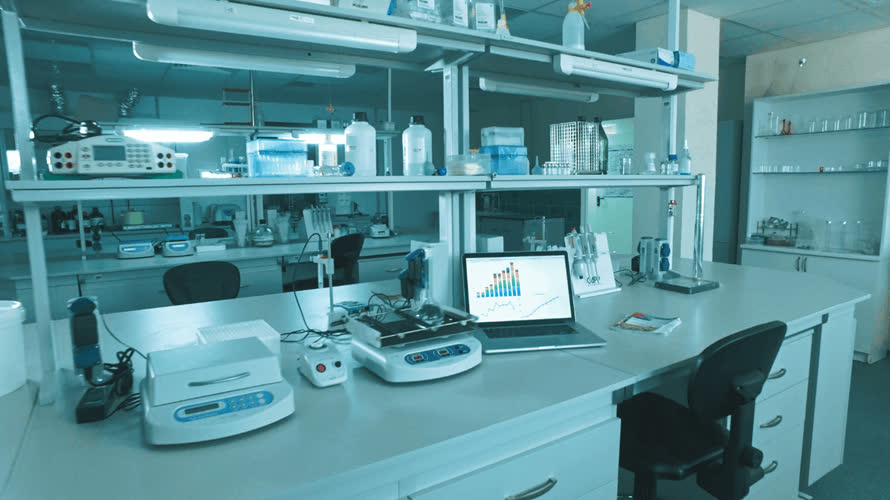
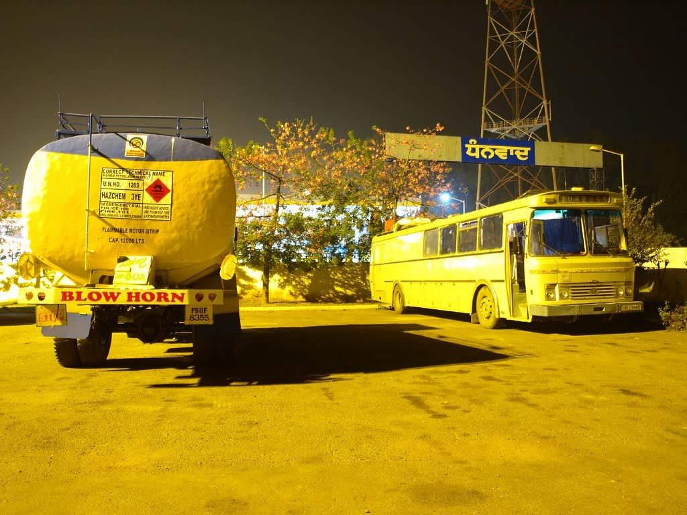
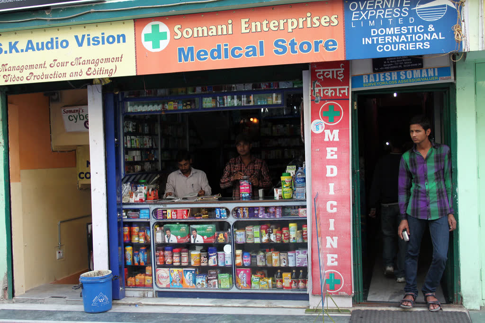
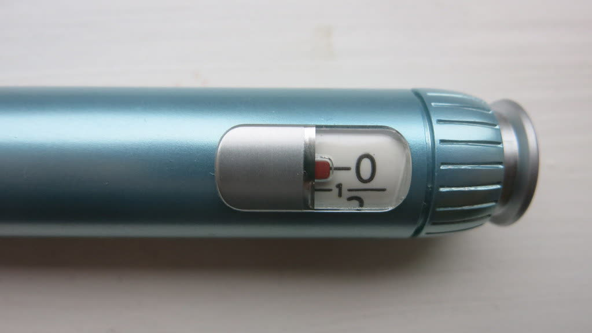
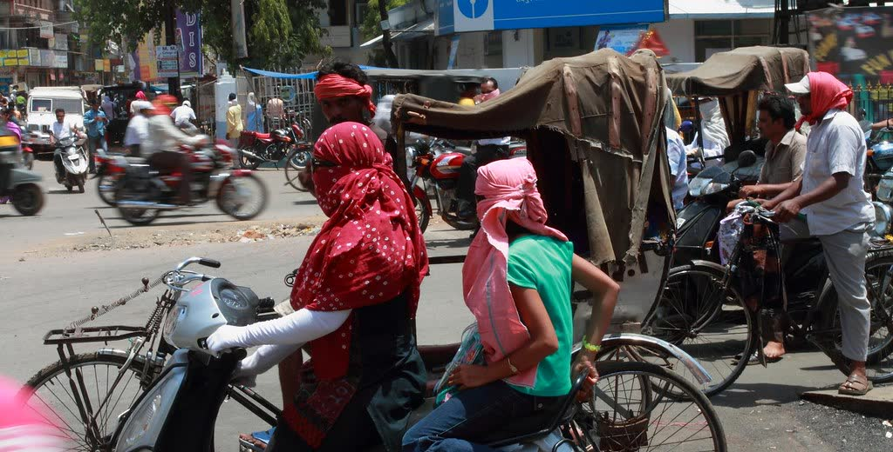
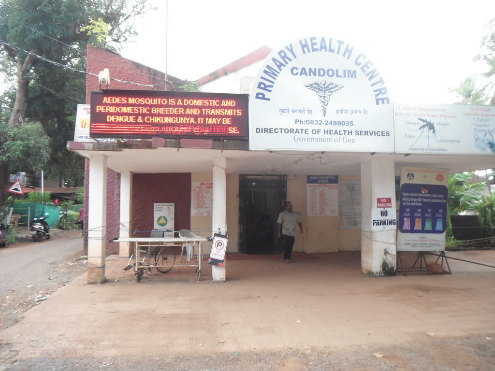
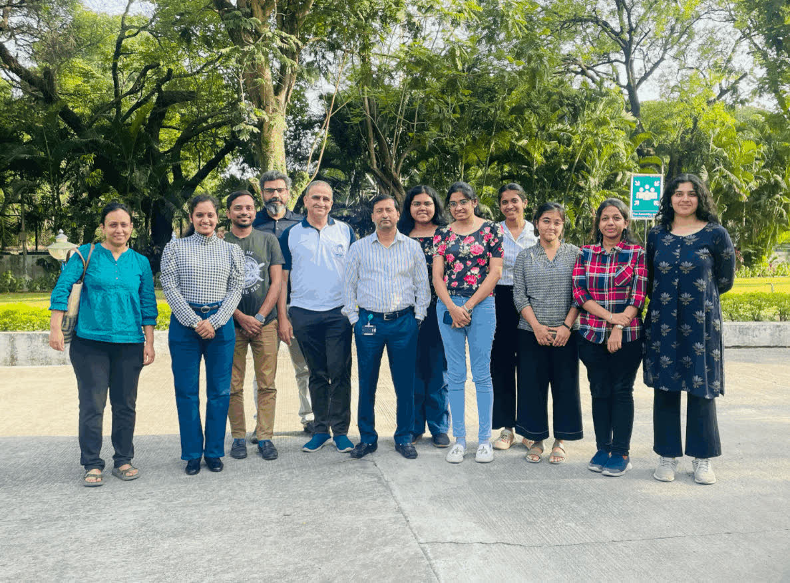

Diabetes
InStrong
800M+ people living with diabetes
- Thermostable insulin, stored at room temperature
- 5× higher stability; sustained at 50°C
- Built for places without cold storage or steady power
Thermostable biologics · India and France
In much of India and Africa, the cold chain breaks long before insulin reaches the patient. Lamark's patented ProteoStrong technology keeps biologics stable at room temperature, so the medicine survives the journey.




Drag the heat
Conventional insulin
Labelled for storage at 2–8°C until use. Needs a working fridge at every step.
Outside storage rangeInStrong
Lamark's thermostable insulin. Stability sustained over time at 50°C.
Within tested rangeInStrong is in development and not yet approved for patient use.

A Delhi afternoon in April
The journey of one vial
Controlled cold room
Cold chainThe vial leaves at 2–8°C. Every stop after this one has to keep it there.
InStrongStored and shipped at room temperature from here on.
Two days in a truck
Cold chainReefer trucks are scarce outside big cities. One breakdown is enough.
InStrongAny truck will do. Lamark expects around 20% lower costs.

Breaks herePower cuts in summer
Cold chainStock that warms up in an outage quietly loses efficacy.
InStrongThe power cut stops mattering.
No reliable fridge
Cold chainOften not stocked at all. The patient travels to town, or goes without.
InStrongStocked where people live.
A home in May
Cold chainDegraded insulin means missed doses, then amputations and kidney failure.
InStrongThe dose that arrives, works.
Figures as cited on lamarkbiotech.com/diabetes.

ProteoStrong technology
Think of formulation as “building a nest”.
A biologic can take a decade to discover and still fail on the road. ProteoStrong is Lamark's patented formulation platform: one technology, applied to insulin and to other life-saving proteins.
Programmes
Diabetes
800M+ people living with diabetes

Wet AMD
6–12 eye injections a year today
Lung cancer
18.7% of all cancer deaths
Pipeline
Every candidate is built on ProteoStrong. Filter by disease to see where each one stands.
| Candidate |
R&D
PoC
Working TPP
IND-enabling
Clinical Ph 1/2
|
|---|---|
INS-RTA InStrong · Diabetes |
Working target product profile |
INS-R2T InStrong · Diabetes |
Working target product profile |
RD-LB EyeStrong · Wet AMD |
Proof of concept |
RD-LC EyeStrong · Wet AMD |
Proof of concept |
KRK-TTA OncoStrong · Lung cancer |
Research |
PEM-ST OncoStrong · Lung cancer |
Research |
Positions are read from the pipeline chart on the current site. Lamark's team would confirm each stage before this goes live.
Team
To care for medicines, so they can care for us.



Lamark in pictures
Tap any photo to see it full size.
Work with Lamark
Lamark is a B2B company. Pick the one that fits and we'll route it to the right person.
We partner with pharmaceutical companies for API manufacturing, clinical trials and market expansion. Our technology is already applied to insulin and four other proteins.